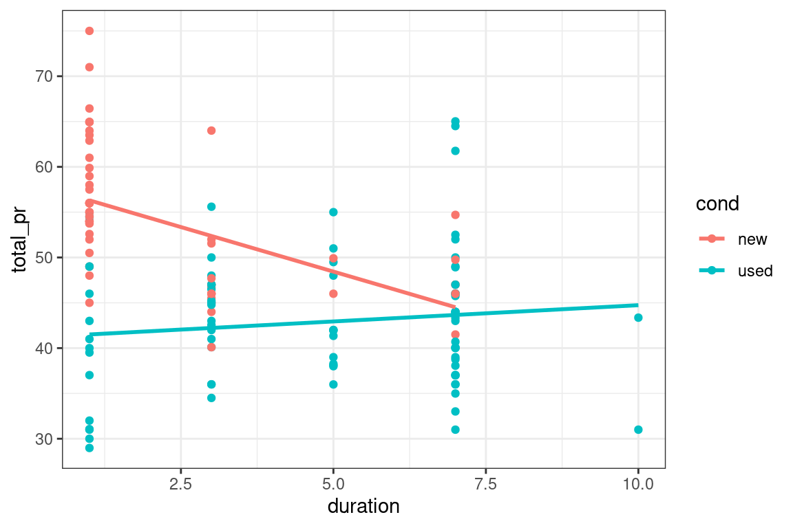

Chapter 3 Evaluating and extending parallel slopes model
This chapter covers model evaluation. By looking at different properties of the model, including the adjusted R-squared, you’ll learn to compare models so that you can select the best one. You’ll also learn about interaction terms in linear models.
Model fit, residuals, and prediction
3.1 R-squared vs. adjusted R-squared
Two common measures of how well a model fits to data are \(R^2\) (the coefficient of determination) and the adjusted \(R^2\). The former measures the percentage of the variability in the response variable that is explained by the model. To compute this, we define
\[R^2 = 1 − \frac{SSE}{SST},\] where \(SSE\) and \(SST\) are the sum of the squared residuals, and the total sum of the squares, respectively. One issue with this measure is that the \(SSE\) can only decrease as new variable are added to the model, while the \(SST\) depends only on the response variable and therefore is not affected by changes to the model. This means that you can increase \(R^2\) by adding any additional variable to your model—even random noise.
The adjusted \(R^2\) includes a term that penalizes a model for each additional explanatory variable (where \(p\) is the number of explanatory variables).
\[R^2_{\text{adj}} = 1 − \frac{SSE}{SST}\cdot\frac{n-1}{n-p-1},\]
We can see both measures in the output of the summary() function on our model object.
Exercise
- Use
summary()to compute \(R^2\) and adjusted \(R^2\) on the model object calledmod.
Call:
lm(formula = total_pr ~ wheels + cond, data = mario_kart)
Residuals:
Min 1Q Median 3Q Max
-11.0078 -3.0754 -0.8254 2.9822 14.1646
Coefficients:
Estimate Std. Error t value Pr(>|t|)
(Intercept) 42.3698 1.0651 39.780 < 2e-16 ***
wheels 7.2328 0.5419 13.347 < 2e-16 ***
condused -5.5848 0.9245 -6.041 1.35e-08 ***
---
Signif. codes: 0 '***' 0.001 '**' 0.01 '*' 0.05 '.' 0.1 ' ' 1
Residual standard error: 4.887 on 138 degrees of freedom
Multiple R-squared: 0.7165, Adjusted R-squared: 0.7124
F-statistic: 174.4 on 2 and 138 DF, p-value: < 2.2e-16The \(R^2\) value for mod is 0.7165182, and the \(R^2_{\text{adj}}\) value is 0.7124098.
- Use
mutate()andrnorm()to add a new variable callednoiseto themario_kartdata set that consists of random noise. Save the new dataframe asmario_kart_noisy.
# add random noise
set.seed(34)
# add random noise
mario_kart_noisy <- mario_kart %>%
mutate(noise = rnorm(nrow(mario_kart)))- Use
lm()to fit a model that includeswheels,cond, and the random noise term.
- Use
summary()to compute \(R^2\) and adjusted \(R^2\) on the new model object. Did the value of \(R^2\) increase? Yes What about adjusted \(R^2\)? It also increased. Adding random noise increase both \(R^2\) and \(R^2_{\text{adj}}\).
Call:
lm(formula = total_pr ~ wheels + cond + noise, data = mario_kart_noisy)
Residuals:
Min 1Q Median 3Q Max
-10.3256 -3.1692 -0.7492 2.8731 14.1293
Coefficients:
Estimate Std. Error t value Pr(>|t|)
(Intercept) 42.2788 1.0659 39.664 < 2e-16 ***
wheels 7.2310 0.5410 13.367 < 2e-16 ***
condused -5.4003 0.9354 -5.774 4.97e-08 ***
noise -0.4930 0.4059 -1.215 0.227
---
Signif. codes: 0 '***' 0.001 '**' 0.01 '*' 0.05 '.' 0.1 ' ' 1
Residual standard error: 4.879 on 137 degrees of freedom
Multiple R-squared: 0.7195, Adjusted R-squared: 0.7134
F-statistic: 117.2 on 3 and 137 DF, p-value: < 2.2e-163.2 Prediction
Once we have fit a regression model, we can use it to make predictions for unseen observations or retrieve the fitted values. Here, we explore two methods for doing the latter.
A traditional way to return the fitted values (i.e. the \(\hat{y}\)’s) is to run the predict() function on the model object. This will return a vector of the fitted values. Note that predict() will take an optional newdata argument that will allow you to make predictions for observations that are not in the original data.
A newer alternative is the augment() function from the broom package, which returns a data.frame with the response variable (\(y\)), the relevant explanatory variables (the \(x\)’s), the fitted value (\(\hat{y}\)) and some information about the residuals (\(\hat{\varepsilon}\)). augment() will also take a newdata argument that allows you to make predictions.
Exercise
The fitted model mod is already in your environment.
- Compute the fitted values of the model as a vector using
predict().
1 2 3 4 5 6
49.60260 44.01777 49.60260 49.60260 56.83544 42.36976 - Compute the fitted values of the model as one column in a
data.frameusingaugment().
# A tibble: 6 x 9
total_pr wheels cond .fitted .resid .hat .sigma .cooksd .std.resid
<dbl> <int> <fct> <dbl> <dbl> <dbl> <dbl> <dbl> <dbl>
1 51.6 1 new 49.6 1.95 0.0210 4.90 0.00116 0.403
2 37.0 1 used 44.0 -6.98 0.0125 4.87 0.00871 -1.44
3 45.5 1 new 49.6 -4.10 0.0210 4.89 0.00515 -0.848
4 44 1 new 49.6 -5.60 0.0210 4.88 0.00961 -1.16
5 71 2 new 56.8 14.2 0.0192 4.75 0.0557 2.93
6 45 0 new 42.4 2.63 0.0475 4.90 0.00505 0.551Understanding interaction
Thought experiments
Suppose that after going apple picking you have 12 apples left over. You decide to conduct an experiment to investigate how quickly they will rot under certain conditions. You place six apples in a cool spot in your basement, and leave the other six on the window sill in the kitchen. Every week, you estimate the percentage of the surface area of the apple that is rotten or moldy.
Consider the following models:
\[rot=\beta_0 + \beta_1\cdot t + \beta_2 \cdot temp,\]
and
\[rot=\beta_0 + \beta_1\cdot t + \beta_2 \cdot temp + \beta_3 \cdot temp \cdot t,\]
where \(t\) is time, measured in weeks, and \(temp\) is a binary variable indicating either cool or warm.
If you decide to keep the interaction term present in the second model, you are implicitly assuming that:
The amount of rot will vary based on the temperature.
The amount of rot will vary based on the temperature, after controlling for the length of time they have been left out.
The rate at which apples rot will vary based on the temperature.
Time and temperature are independent.
3.3 Fitting a model with interaction
Including an interaction term in a model is easy—we just have to tell lm() that we want to include that new variable. An expression of the form
will do the trick. The use of the colon (:) here means that the interaction between x and z will be a third term in the model.
Exercise
The data frame mario_kart is already loaded in your workspace.
- Use
lm()to fit a model for the price of a MarioKart as a function of its condition and the duration of the auction, with interaction.
Call:
lm(formula = total_pr ~ cond + duration + cond:duration, data = mario_kart)
Coefficients:
(Intercept) condused duration condused:duration
58.268 -17.122 -1.966 2.325 3.4 Visualizing interaction models
Interaction allows the slope of the regression line in each group to vary. In this case, this means that the relationship between the final price and the length of the auction is moderated by the condition of each item.
Interaction models are easy to visualize in the data space with ggplot2 because they have the same coefficients as if the models were fit independently to each group defined by the level of the categorical variable. In this case, new and used MarioKarts each get their own regression line. To see this, we can set an aesthetic (e.g. color) to the categorical variable, and then add a geom_smooth() layer to overlay the regression line for each color.
Exercise
The dataset mario_kart is already loaded in your workspace.
- Use the
coloraesthetic and thegeom_smooth()function to plot the interaction model between duration and condition in the data space. Make sure you set themethodandsearguments ofgeom_smooth().
# interaction plot
ggplot(data = mario_kart, aes(y = total_pr, x = duration, color = cond)) +
geom_point() +
geom_smooth(method = "lm", se = FALSE) +
theme_bw()
- How does the interaction model differ from the parallel slopes model? Class discussion
Simpson’s paradox
3.5 Consequences of Simpson’s paradox
In the simple linear regression model for average SAT score, (total) as a function of average teacher salary (salary), the fitted coefficient was -5.02 points per thousand dollars. This suggests that for every additional thousand dollars of salary for teachers in a particular state, the expected SAT score for a student from that state is about 5 points lower.
In the model that includes the percentage of students taking the SAT, the coefficient on salary becomes 1.84 points per thousand dollars. Choose the correct interpretation of this slope coefficient.
### Get Data
url <- "https://assets.datacamp.com/production/repositories/845/datasets/1a12a19d2cec83ca0b58645689987e2025d91383/SAT.csv"
if(!file.exists("./Data/SAT.csv")){
download.file(url, destfile = "./Data/SAT.csv")}
SAT <- read.csv("./Data/SAT.csv")
###
lm(total ~ salary, data = SAT)
Call:
lm(formula = total ~ salary, data = SAT)
Coefficients:
(Intercept) salary
1.871e+03 -5.019e-03 SAT_wbin <- SAT %>%
mutate(sat_bin = cut(sat_pct, 3))
mod <- lm(formula = total ~ salary + sat_bin, data = SAT_wbin)
mod
Call:
lm(formula = total ~ salary + sat_bin, data = SAT_wbin)
Coefficients:
(Intercept) salary sat_bin(33,63] sat_bin(63,93.1]
1597.10773 0.00184 -191.45221 -217.73480 For every additional thousand dollars of salary for teachers in a particular state, the expected SAT score for a student from that state is about 2 points lower.
For every additional thousand dollars of salary for teachers in a particular state, the expected SAT score for a student from that state is about 2 points higher, after controlling for the percentage of students taking the SAT.
The average SAT score in richer states is about 2 points higher.
3.6 Simpson’s paradox in action
A mild version of Simpson’s paradox can be observed in the MarioKart auction data. Consider the relationship between the final auction price and the length of the auction. It seems reasonable to assume that longer auctions would result in higher prices, since—other things being equal—a longer auction gives more bidders more time to see the auction and bid on the item.
However, a simple linear regression model reveals the opposite: longer auctions are associated with lower final prices. The problem is that all other things are not equal. In this case, the new MarioKarts—which people pay a premium for—were mostly sold in one-day auctions, while a plurality of the used MarioKarts were sold in the standard seven-day auctions.
Our simple linear regression model is misleading, in that it suggests a negative relationship between final auction price and duration. However, for the used MarioKarts, the relationship is positive.
Exercise
The object slr is already defined for you.
slr <- ggplot(mario_kart, aes(y = total_pr, x = duration)) +
geom_point() +
geom_smooth(method = "lm", se = 0) +
theme_bw()
slr
Figure 3.1: total_pr versus duration
- Fit a simple linear regression model for final auction price (
total_pr) as a function of duration (duration).
Call:
lm(formula = total_pr ~ duration, data = mario_kart)
Coefficients:
(Intercept) duration
52.374 -1.317 - Use
aes()to add a color aesthetic that’s mapped to the condition variable to theslrobject, shown in Figure 3.1.

- Which of the two groups is showing signs of Simpson’s paradox? Class discussion